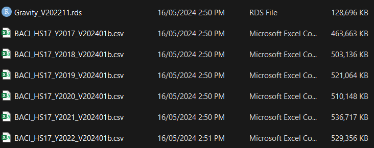

The gravity model is probably the most popular model in international trade. Many uses them. It is very intuitive, great predictive power, and most importantly, tweakable (Yotov 2022). But the even most important is that UI students love them. If you’re doing trade for your thesis, then you probably going to use the gravity model as your backbone.
This guide is my attempt to help you learn gravity model much easier. The most important part is probably the data and the model itself. What is the minimum things you need in the gravity model, how to arrange the database, run them, and interpret them. You must familiarize yourself with the data and its wrangling (80% of your coding) as well as the main gravity specification to date. I encourage students to pay careful attention to Yotov (2022) as it hosts the recent development in the gravity model, a must read if you’re planning to utilize gravity model.
I use R here because I use R much more than Stata these days. However, the two language aren’t very different. You can do the same thing on both, but you may need to google a bit. It’s okay to use google a lot. I did as well even right now. Oh yeah I also informed you guys know R already so I won’t go into too much basic stuff.
Next is the preparation you’ll need. Make sure you read it carefully and install & download everything in advance!
Preparation
This workshop is conducted with the R statistical software, RStudio IDE, and penppml (Correia, Guimarães, and Zylkin 2020) package. Of course you’re going to need tidyverse as well, or specifically dplyr package. You want to procure data beforehand too, and I will use CEPII data. let’s discuss one by one.
Software
You’d want to use R and RStudio for this. The main reason I use R is because it’s free. Stata is not. I think Stata is faster and a bit easier (R people will kill me if they see this) but not cheap. If you have Stata it’s fine too. The command you’d want in stata is ppmlhdfe.
Now onto R. You can procure R and RStudio from Posit’s website. Get it here. I wrote the guide to install R and RStudio here, so you better check it out. It’s written in Indonesian.
After that, you are going to need to install some packages. Follow my step until I told you to do type this on the console install.packages(c("tidyverse","WDI","readxl","kableExtra")). You are going to do the same but you’re going to need an extra stuff. Specifically, you need to add “penppml” in the list. That is, you need to type
This step requires internet connection, but you’ll need to do this only once.
Data
I procure data for this workshop from [CEPII]. From their website, CEPII is:
he CEPII is the leading French center for research and expertise on the world economy. It contributes to the policy making process trough its independent in-depth analyses on international trade, migrations, macroeconomics and finance. The CEPII also produces databases and provides a platform for debate among academics, experts, practitioners, decision makers and other private and public stakeholders. Founded in 1978, the CEPII is part of the network coordinated by France Strategy, within the Prime Minister’s services.
I use their BACI dataset (Gaulier and Zignago 2010) and gravity dataset (Conte, Cotterlaz, and Mayer 2022). You can get those from this link. BACI is under “international trade” banner while gravity is under “Gravity” banner. Specifically, I downloaded the 2017-2022 version of BACI and for the gravity dataset I downloaded the R version. You can of course download whichever version you like but for the purpose of this workshop maybe its best to stick with the same dataset as I.
Note that the data here is extremely large in size so be mindful. You need hefty internet quota and reasonable speed. Also, you can try opening it with spreadsheet software but unless you have a strong computer, i’d advice against it. Use R instead.
In the CEPII website you can use various other dataset that may be useful for you. At the same time, there are various other source you can utilise for your actual project that’s not necessarily from CEPII.
working directory
If you finished downloading data and installing softwares, you then need to set up a working directory. A working directory is basically a folder where you have all the data and your R script (R version of do file). For now what you want is to have a folder filled with your downloaded data. Make sure you know the path to this folder. I tend to use easy path for my projects and move it somewhere else when i finished. If you use github or the likes, it’ll be even nicer because you can actually wipe out your local repo if you finish.
All in all, you should have a folder with these stuff in it:

Notes about the data country_codes, product_codes and Readme are all for reading BACI.
Simple gravity specification
Theory
The earliest (e.g., naive) gravity model taking directly from Newtonian gravity theory looks something like this:
where \(X_{it}\) is the value of trade flow from country \(i\) to country \(j\), \(\tilde{G}\) is the gravitational constant (aka our usual constant), \(Y_i\) is the output in country \(i\)\(E_j\) is the value of expenditure in country \(j\) and \(T_{ij}\) is the total bilateral trade frictions / trade cost between country \(i\) and country \(j\).
There are various other types of gravity equations, but let’s start with a relatively simple one. One of my favorite simple gravity specification is a budget version of Silva and Tenreyro (2006) which is taken from (avn?) which looks like this:
where \(\alpha_0\) is your \(\tilde{G}\), while \(Y\) is the output and expenditure which is proxied with GDP. \(D_{ij}\) is the distance between the two countries, which can be generalized as a vector of trade cost measures. Typically we use physical distance but also other types of bilateral trade cost. Lastly, the \(d_i\) and \(d_j\) is country-specific characteristics.
There are various variables used in Silva and Tenreyro (2006). log of exporter’s and importer’s GDP and GDP per capita. Various “distance” variables is used as well e.g., physical distance and various contiguity, common-language dummy
t2017<-read_csv("BACI_HS17_Y2017_V202401b.csv")t2018<-read_csv("BACI_HS17_Y2018_V202401b.csv")t2019<-read_csv("BACI_HS17_Y2019_V202401b.csv")t2020<-read_csv("BACI_HS17_Y2020_V202401b.csv")t2021<-read_csv("BACI_HS17_Y2021_V202401b.csv")t2022<-read_csv("BACI_HS17_Y2022_V202401b.csv")## Combining all trade<-rbind(t2017,t2018,t2019,t2020,t2021,t2022)remove(t2017,t2018,t2019,t2020,t2021,t2022)
I used read_csv from the tydiverse package for reading .csv. rbind is to stack all BACI data (it was separated per year), then I remove the individual BACI to save environment space.
At this point, you can try checking out the two datasets. You can try looking at both data by calling their names. Alternatively, just look at the column names with colnames(). Let’s try the BACI frist.
Code
colnames(trade)
[1] "t" "i" "j" "k" "v" "q"
There are only 6 columns / variables. Here’s some information on what thos means
var
meaning
t
year
i
exporter
j
importer
k
product
v
value
q
quantity
Products in Harmonized System 6-digit nomenclature. Values in thousand USD and quantities in metric tons. Exporter and importer is codified using CEPII codes. the codes and it means can be found in the “key” dataset. To have country identities into the BACI dataset, we need to join the two.
To join the two datasets, we need a key variable. A key variable is the variable connecting the two variables. Both needs the same name. So first we need to
Correia, Sergio, Paulo Guimarães, and Tom Zylkin. 2020. “Fast Poisson Estimation with High-Dimensional Fixed Effects.” Journal Article. The Stata Journal 20 (1): 95–115. https://doi.org/10.1177/1536867x20909691.